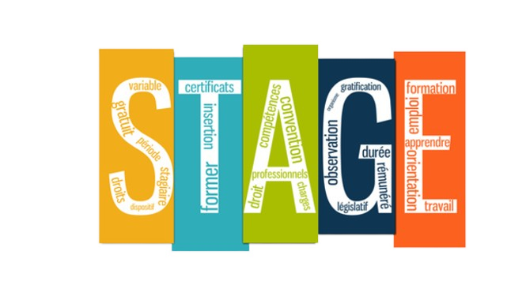
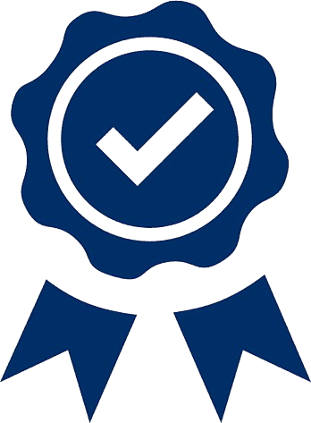
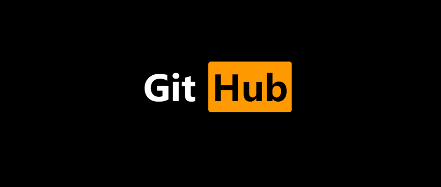

Je suis un développeur en BTS SIO Je suis passionné par le développement back-end et l'intelligence artificielle
Je suis à Marseille, j'étudie le réseau et le développement mais j'ai une préférence pour le développement
Mon CV
Ce site est un peu comme mon blog personnel.
J’y partage des sujets qui m’intéressent et me passionnent.
Afin que vous puissiez mieux me connaître, voici une présentation de mon parcours professionnel :
Je suis issu d’un baccalauréat professionnel SN SSIHT (Systèmes Numériques option sûreté et sécurité des infrastructures, de l'habitat et du tertiaire).
Puis j'ai decider de m'orienter sur le developpement en BTS SIO, cette formation ma permis d'entrée dans le domaine informatique
où j’ai pu apprendre les bases de la programmation et des réseaux, tout en renforçant mes compétences.
Cette année durant mon parcours candidat libre, je me suis lancer dans 3 grands projets personnel pour enrichissir mon apprentissage.
Aujourd’hui, je suis déterminé à continuer à développer mes compétences en informatique
afin de garantir la pérennité de mon avenir professionnel.

Durant cette année de BTS SIO option SLAM, je n’ai malheureusement pas pu intégrer une entreprise spécialiser dans le developpement.
Mon stage de cette année s’est déroulé au sein de l’entreprise Fournil de la Calade, Un projet de création de site web pour une boulangerie, que j'ai conçu et développé.
Pendant cette période, j’ai eu l’opportunité de développer plusieurs outils afin de faciliter l'ergonomie du site et son utilisation,
ainsi que d’intervenir sur la mise en avant des valeurs de l’entreprise en le rendant plus attractif,
tout en le rendant intuitif et claire pour les utilisateurs.
Cette expérience m’a permis d’appliquer concrètement mes compétences en développement, tout en découvrant les réalités du travail en entreprise.

En ce moment, mes trois principaux projets en développement me prennent beaucoup de temps et d’énergie,
ainsi que des projets personnels en C#, C, Python, Java et MySQL. Ces projets me permettent non seulement de renforcer mes compétences pratiques, mais aussi de préparer activement mes certifications dans ces technologies..
Bien que je n'aie pas encore obtenu ces certifications, mon travail quotidien et l’application directe de ces langages dans des projets réels témoignent de ma maîtrise croissante.
Une fois ces projets terminés, je me concentrerai pleinement sur l’obtention de ces certifications pour valider mes compétences.
Avec la multiplication des cybermenaces, les outils traditionnels de cybersécurité montrent leurs limites. L'intelligence artificielle (IA) émerge comme une solution prometteuse pour renforcer la détection et la réponse aux attaques. En tant qu'étudiant passionné par la cybersécurité, cette évolution technologique représente une opportunité d'approfondir mes compétences et de me préparer aux défis futurs du secteur.
L'IA est utilisée pour détecter des comportements anormaux sur un réseau ou un système, analyser d’énormes volumes de données en un temps record, automatiser les réponses aux attaques (ex : isoler une machine infectée) et prédire les failles avant qu’elles ne soient exploitées. Par exemple, un antivirus basé sur l’IA peut détecter un virus même s’il n’a jamais été vu auparavant, et un pare-feu intelligent peut apprendre des habitudes de trafic pour bloquer les anomalies.
Voici quelques solutions concrètes basées sur l’IA :
Grâce aux différents travaux pratiques réalisés au cours de mon année en BTS,
je suis en mesure de concevoir un site web statique en HTML, enrichi avec du CSS pour le style et l’esthétique,
ainsi que des animations et interactions en JavaScript afin d’offrir une expérience utilisateur fluide et dynamique.
À l’aide des langages C#,
je suis capable de développer des applications robustes et fiables, en respectant un cahier des charges précis
et en tenant compte des besoins spécifiques de l’utilisateur final.
Fort de mes trois années de formation en section réseau durant mon Bac PRO SN SSIHT,
je suis capable de configurer un espace de sûreté et sécurisé afin de mettre en place
un réseau d’entreprise stable, performant et adapté aux besoins des utilisateurs.
